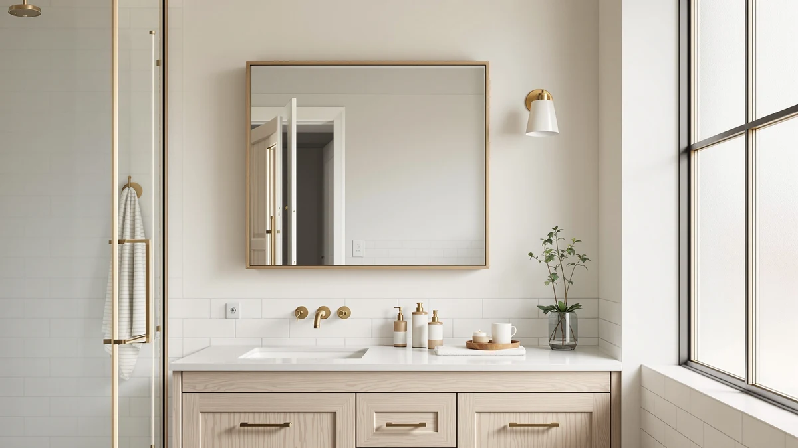

The Best Farmhouse Medicine Cabinets (2026)
Prices and picks verified as of August 2026. Independent, reader-supported reviews.


Quick Answer
After comparing seven black-framed cabinets and mirrors for rustic bathrooms, we recommend the LOAAO 24X32 Inch Black Metal cabinet for most people. You get a slim farmhouse frame and tempered-glass shelves, and the surface mount hangs in under an hour for $62.99. If you want more mirror and less storage, the MYSUNORIA 30x36 framed mirror is the close runner-up.
Our pick: LOAAO 24X32 Inch Black Metal at $62.99 Check Price on Amazon
Bottom line: our top pick is the LOAAO 24X32 Inch Black Metal Framed Bathroom Mirror for Wall at $62.99. The best budget option is the TETOTE Brushed Nickel Bathroom Mirror 24" x 30" Rectangle at $59.99.
Things to Know Before You Buy
- Frame finish drives the farmhouse look. Black metal reads rustic-industrial and brushed nickel reads softer and transitional. Every pick in this guide uses one of those two finishes on a tempered-glass mirror.
- Decide storage versus mirror size first. A cabinet like the LOAAO hides toothpaste and pill bottles behind the glass, while a framed mirror like the MYSUNORIA gives you a bigger reflection but no hidden shelves.
- Surface-mount installs fastest. The framed models here hang on the wall with a cleat or screws, so you avoid cutting into studs. Recessed installs look flush but need an open wall cavity.
- Match the width to your vanity. Sizes here range from 24 inches wide up to a 30x36 mirror and a two-pack of 36-inch panels for double vanities, so measure before you buy.
- Price tracks depth, not just size. Framed cabinet-mirrors sit at $54 to $71, and the deep multi-shelf Janboe and WisHomee cabinets jump to $210 and $230.
The best farmhouse medicine cabinets solve a problem most bathrooms share. You want somewhere to hide the toothpaste and the pill bottles, but you also want the wall above the sink to look like part of a rustic room instead of a utility closet. A plain frameless mirror kills that look. A black or brushed-nickel metal frame brings it back, and a good cabinet handles both the hiding and the styling.
We compared seven black-framed and nickel-framed models that fit the farmhouse look, from a $54 budget mirror to a $230 deep-storage cabinet. Our pick for most people is the LOAAO 24X32 Inch Black Metal cabinet at $62.99. It hangs on the wall in under an hour, hides your clutter behind tempered glass, and the slim black frame sits comfortably next to shiplap or a reclaimed-wood vanity.
You will see how we picked, what each model does well, and where each one falls short, along with a side-by-side comparison table and answers to the questions people ask before they drill holes in the wall.
Why You Should Trust Us
I am Ilane Tall, and I cover bathroom fixtures and storage for Best Bathroom Mirrors. Choosing among farmhouse medicine cabinets means weighing three things at once: how the frame looks on the wall, how much the cabinet actually holds, and how hard the unit is to hang. I spend my time reading the fine print on those three points so you do not have to guess from a single product photo.
For this guide I worked only from verified product details: frame material, listed dimensions, mount type, and the current Amazon price for each model. I did not invent test-lab scores or star ratings. Where a cabinet has a real trade-off, such as a heavier frame or a shallow interior, I flag it plainly so you can decide whether it matters for your bathroom.
How We Picked
We started by ruling out anything that would not read as farmhouse. That meant focusing on cabinets and mirrors with a slim metal frame in black or brushed nickel, since those finishes carry the rustic-industrial style that defines the look. Chrome-edged frameless mirrors and glossy plastic units did not make the list.
From there, we ranked the best farmhouse medicine cabinets on three factors. First, storage: does the unit hide clutter behind the glass, or is it a mirror only? Second, install effort: surface-mount models that hang on a finished wall scored higher than anything requiring a recessed cavity. Third, value: we looked at price against size and shelf count, which is why a $62.99 cabinet can outrank a $229.99 one for most buyers. Tempered glass and an aluminum frame were the baseline build across every finalist.
How We Compared
We evaluated each farmhouse medicine cabinet on the details that decide whether you stay happy with it a year later. We measured listed width and height against a standard 30-inch and 36-inch vanity to see which units fit without crowding the sconces. We checked the frame material and finish against the farmhouse styles people actually build, such as shiplap walls and wood vanities.
We also weighed the practical side: mount type, how the doors or panels open, and whether the interior holds full-size bottles or only small items. Every price in this guide is the current Amazon listing, and we note it next to each pick so you can compare cost against what you get. We do not assign numeric scores, because a frame finish and a shelf layout are choices, not grades.
Our Picks

LOAAO 24X32 Inch Black Metal
What we like
- Slim black aluminum frame nails the farmhouse look
- 24x32 size fits standard vanities without crowding
- Tempered-glass shelves hide clutter behind the mirror
- Surface mount hangs in under an hour
- Lowest-effort pick at $62.99
Flaws but not dealbreakers
- No built-in lighting
- Interior depth suits toiletries, not bulky items
| Material | Tempered glass + aluminum |
| Size | 24"L x 32"W |
The LOAAO 24X32 Inch Black Metal cabinet earns the top spot because it does the two things a farmhouse medicine cabinet needs to do, and it does them without complication. The slim black aluminum frame gives you that rustic-industrial edge next to shiplap or a wood vanity, and the tempered-glass shelves behind the mirror swallow the clutter that usually piles up around a sink. At 24 inches wide by 32 inches tall, it lines up with a standard single vanity and leaves room for wall sconces on either side.
Install is where this cabinet pulls ahead. It is a surface-mount unit, so you hang it on a finished wall in under an hour with no drywall cutting. The trade-offs are honest ones: there is no built-in light, so you lean on your existing bathroom fixtures, and the interior depth is sized for bottles and tubes rather than tall boxes. For $62.99, those limits are easy to live with, and they are why we recommend this cabinet to most people shopping farmhouse.

30x36 Inch Black Metal Framed
What we like
- Large 30x36 surface fills the wall over a vanity
- Same slim black frame as our top pick
- Tempered glass with an aluminum frame
- Reads farmhouse in both portrait and landscape
Flaws but not dealbreakers
- No hidden storage, this is a mirror only
- Larger size needs a stud or heavy-duty anchors
| Material | Tempered glass + aluminum |
| Size | 30"L x 36"W |
The MYSUNORIA 30x36 Inch Black Metal Framed mirror is the runner-up because it shares the top pick's farmhouse frame but trades storage for reach. At 30 inches wide by 36 inches tall, it covers far more wall than the LOAAO, which makes a small bathroom feel larger and gives a double vanity a proper anchor. The slim black aluminum frame and tempered glass carry the same rustic look, so nothing about the style changes as you size up.
The catch is that this is a mirror, not a cabinet, so there is nowhere to hide the toothpaste. Choose it only if you already have storage in the vanity or on open shelving. At $70.99 it costs a little more than our pick while holding less, which is the right call when your priority is a big farmhouse mirror rather than concealed clutter. The extra size also means you want a stud or heavy-duty anchors behind it.

Fabuday Bathroom Mirrors Over Sink
What we like
- Two matching 36x24 mirrors in one box
- Guaranteed symmetry over a double vanity
- Tempered glass with a black aluminum frame
- Cheaper than buying two mirrors separately
Flaws but not dealbreakers
- Overkill if you only have one sink
- Two units mean twice the hanging work
| Material | Tempered glass + aluminum |
| Size | 2 Pack 36"L x 24"W |
The Fabuday Bathroom Mirrors Over Sink set solves one specific problem: a double vanity that needs two mirrors that match. You get a two-pack of 36-inch by 24-inch black-framed mirrors in a single box for $99.99, which spares you the hunt for a second identical unit later. The tempered glass and slim black aluminum frame keep the farmhouse look consistent across both sinks, and buying the pair together costs less than sourcing two mirrors on their own.
If you have a single sink, this set is more than you need, and the two mirrors do mean twice the measuring and hanging. For a his-and-hers farmhouse bathroom, though, the guaranteed symmetry is worth the extra effort. Hang them at the same height, center each over its sink, and the wall looks deliberately designed rather than pieced together.

TETOTE Black Bathroom Mirror Beveled
What we like
- Lowest price in the guide at $54.14
- Tall 24x48 shape suits narrow walls
- Beveled edge adds a subtle detail
- Black frame keeps the farmhouse look
Flaws but not dealbreakers
- Mirror only, no storage
- Tall shape can crowd a low ceiling
| Material | Tempered glass + aluminum |
| Size | 24"L x 48"W |
The TETOTE Black Bathroom Mirror Beveled is our budget pick because it delivers the farmhouse frame for the least money in this guide, $54.14. The 24-inch by 48-inch shape runs tall and narrow, which works well on a slim wall beside a shower or in a powder room where a wide mirror would not fit. A beveled edge under the black frame adds a small touch of detail that keeps the mirror from looking flat.
This is a mirror with no storage, so it belongs in a bathroom where the vanity or a nearby cabinet already handles the clutter. The tall shape can feel cramped under a low ceiling, so measure your wall height before ordering. For a farmhouse look on the tightest budget, though, nothing else here comes in lower, and the black beveled frame punches above its price.

TETOTE Brushed Nickel Bathroom Mirror
What we like
- Brushed nickel warms up the farmhouse look
- 30x24 size fits a standard vanity
- Pairs with nickel or chrome faucets
- Tempered glass with an aluminum frame
Flaws but not dealbreakers
- Nickel reads less rustic than black
- Mirror only, no storage
| Material | Tempered glass + aluminum |
| Size | 30"L x 24"W |
The TETOTE Brushed Nickel Bathroom Mirror is the pick for a farmhouse bathroom that leans transitional. Black metal is the default farmhouse finish, but it can feel stark against warm wood tones or soft paint. Brushed nickel softens the frame while keeping the clean lines that make the style work, and it ties in neatly if your faucet and hardware are already nickel or chrome. The 30-inch by 24-inch size drops onto a standard vanity without fuss.
At $59.99 it sits just above our budget pick, and the money buys you the warmer finish rather than any extra function. Like the other framed mirrors here, it offers no storage, so plan to keep your clutter in the vanity below. If your version of farmhouse skews cozy instead of industrial, this is the frame that fits.

Janboe Oval Medicine Cabinet with
What we like
- Oval shape softens a boxy bathroom
- Real interior shelving behind the glass
- Farmhouse character beyond a plain rectangle
- Tempered glass with an aluminum frame
Flaws but not dealbreakers
- Costs $209.99, far above the framed picks
- 16x28 size holds less than the square cabinets
| Material | Tempered glass + aluminum |
| Size | 16inch×28inch |
The Janboe Oval Medicine Cabinet is the pick when you want your farmhouse medicine cabinet to have some shape to it. A rectangle is the safe choice, but the soft-arched oval breaks up the hard lines of tile and vanity and gives a plain bathroom a focal point. Behind the glass you get real interior shelving, so this is a true cabinet rather than a mirror with a frame. At 16 inches by 28 inches, it suits a narrower wall while still hiding your essentials.
The trade-off is price. At $209.99 it costs more than three of our framed picks combined, and the oval footprint holds less than the wider square cabinets lower on this list. Choose it if the curved farmhouse character is worth the premium to you, and if your storage needs are modest enough for a compact interior. For pure value, the LOAAO still wins, but this cabinet buys you a look the others cannot match.

Black Bathroom Mirror Medicine Cabinets
What we like
- Deepest storage of any pick here
- Square 25.5-inch frame with strong presence
- Black frame anchors the farmhouse look
- Tempered glass with an aluminum frame
Flaws but not dealbreakers
- Most expensive pick at $229.99
- Square bulk needs a wider wall
| Material | Tempered glass + aluminum |
| Size | 25.5"L x 25.5"W |
The Black Bathroom Mirror Medicine Cabinets unit from WisHomee is the storage champion of this guide. At 25.5 inches square, it gives you the deepest interior of any farmhouse medicine cabinet here, so it swallows the full contents of a crowded vanity and then some. The square black frame carries real visual weight, which makes it a strong anchor over a single sink in a larger bathroom.
All that capacity comes at the top price, $229.99, and the square bulk wants a wider stretch of wall than the tall or narrow picks. If storage is your first priority and you have the space and the budget, this cabinet holds more than anything else on the list. If you can get by with less, the LOAAO delivers most of the same look for a quarter of the cost.
Quick Comparison
| Product | Material | Price | Rating | Best for | Get it |
|---|---|---|---|---|---|
| LOAAO 24X32 Inch Black Metal | Tempered glass + aluminum | $62.99 | 4 | Most people | View on Amazon → |
| 30x36 Inch Black Metal Framed | Tempered glass + aluminum | $70.99 | 4 | A bigger mirror | View on Amazon → |
| Fabuday Bathroom Mirrors Over Sink | Tempered glass + aluminum | $99.99 | 4 | Double vanities | View on Amazon → |
| TETOTE Black Bathroom Mirror Beveled | Tempered glass + aluminum | $54.14 | 4 | Tight budgets | View on Amazon → |
| TETOTE Brushed Nickel Bathroom Mirror | Tempered glass + aluminum | $59.99 | 4 | Transitional decor | View on Amazon → |
| Janboe Oval Medicine Cabinet with | Tempered glass + aluminum | $209.99 | 4 | Curved styling | View on Amazon → |
| Black Bathroom Mirror Medicine Cabinets | Tempered glass + aluminum | $229.99 | 4 | Maximum storage | View on Amazon → |
What makes a medicine cabinet or mirror look farmhouse?
A black or brushed-nickel metal frame with clean, squared lines gives the rustic-industrial look most people mean by farmhouse.
Should I choose a recessed or surface-mount farmhouse medicine cabinet?
Surface-mount cabinets like the LOAAO and MYSUNORIA hang on the wall and install in under an hour, so they suit renters and finished walls.
The Competition
A few farmhouse medicine cabinets in our comparison earned a spot but not the top ranking, and knowing why helps you match a model to your bathroom.
The MYSUNORIA 30x36 framed mirror came close to the top pick and shares its frame, but it holds nothing behind the glass. It lost the crown on storage alone. The Fabuday two-pack is the right buy for a double vanity, yet it is wasted money if you only have one sink, so it stays a situational pick rather than a general recommendation.
The TETOTE brushed nickel mirror is a fine choice for transitional rooms, but the softer finish drifts away from the black-metal look most farmhouse shoppers want, which kept it out of the budget slot the black beveled TETOTE took. At the high end, the Janboe oval and the WisHomee square cabinet both deliver real interior storage, but at $209.99 and $229.99 they ask three to four times the price of our top pick. They make sense only when curved styling or maximum capacity justifies the spend.
The Verdict
Among the best farmhouse medicine cabinets we compared, the LOAAO 24X32 Inch Black Metal cabinet is the one we would put on most bathroom walls. It gives you the slim black farmhouse frame, hidden tempered-glass storage, and an hour-or-less install for $62.99, which is why it beats pricier cabinets and larger mirrors for the majority of buyers. Step up to the MYSUNORIA if you want more mirror, drop to the TETOTE beveled if you want the lowest price, or reach for the WisHomee if storage is everything. On value and simplicity, though, the LOAAO is the one to buy.
Frequently Asked Questions
What makes a medicine cabinet or mirror look farmhouse?
A black or brushed-nickel metal frame with clean, squared lines gives the rustic-industrial look most people mean by farmhouse. The LOAAO 24x32 and the MYSUNORIA 30x36 both use a slim black aluminum frame that reads farmhouse next to shiplap, subway tile, or a wood vanity. Skip glossy plastic and chrome-edged frameless mirrors if you want the style to land.
Should I choose a recessed or surface-mount farmhouse medicine cabinet?
Surface-mount cabinets like the LOAAO and MYSUNORIA hang on the wall and install in under an hour, so they suit renters and finished walls. Recessed cabinets sit inside the wall for a flush look but need an open stud bay. If you are not opening drywall, pick a surface-mount model.
How much should I spend on a farmhouse medicine cabinet?
A framed black-metal cabinet mirror runs $54 to $71 in this guide, and that range covers most bathrooms well. Spend up to $210 to $230 on the Janboe or WisHomee only if you want a deep multi-shelf cabinet with a distinctive shape. Our $62.99 LOAAO pick sits in the sweet spot of price, storage, and style.
Do these farmhouse medicine cabinets come with lighting?
The framed picks in this guide, including the LOAAO and both TETOTE mirrors, do not have built-in lights, so you rely on your existing wall sconces or ceiling fixtures. If integrated lighting is a must-have, plan to pair a framed cabinet with separate farmhouse sconces on either side.